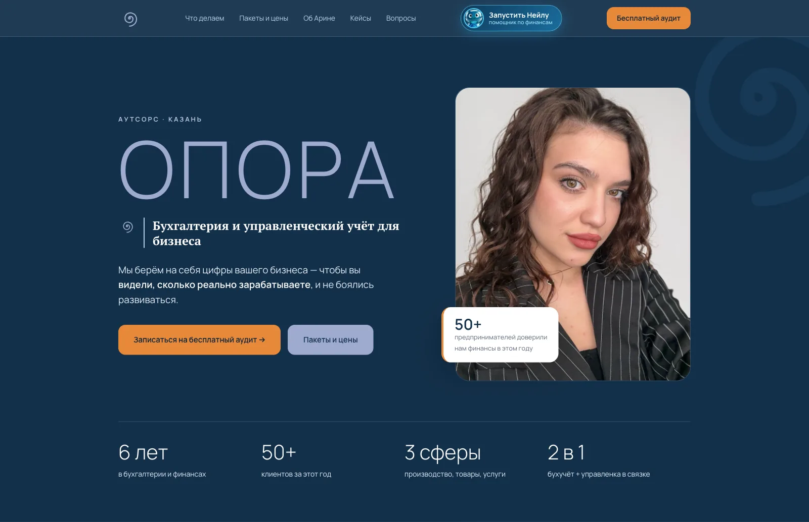
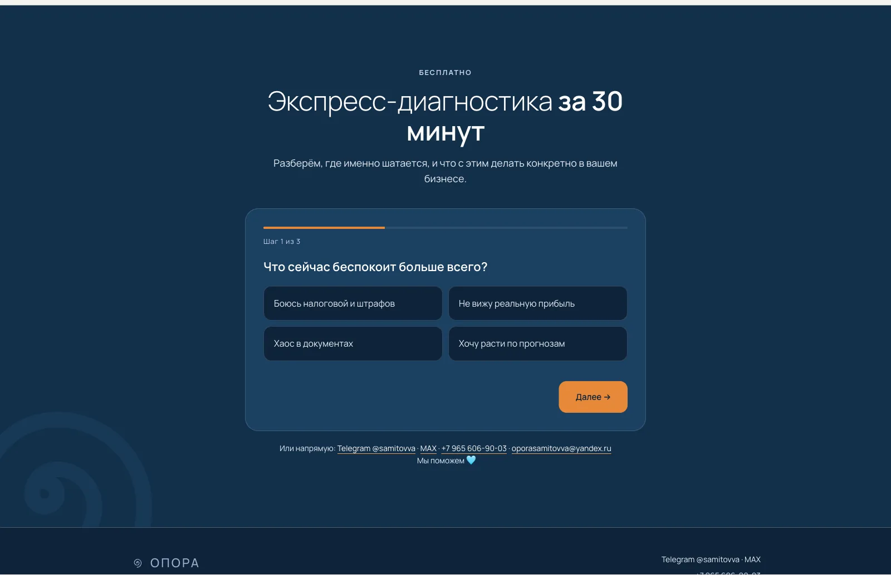
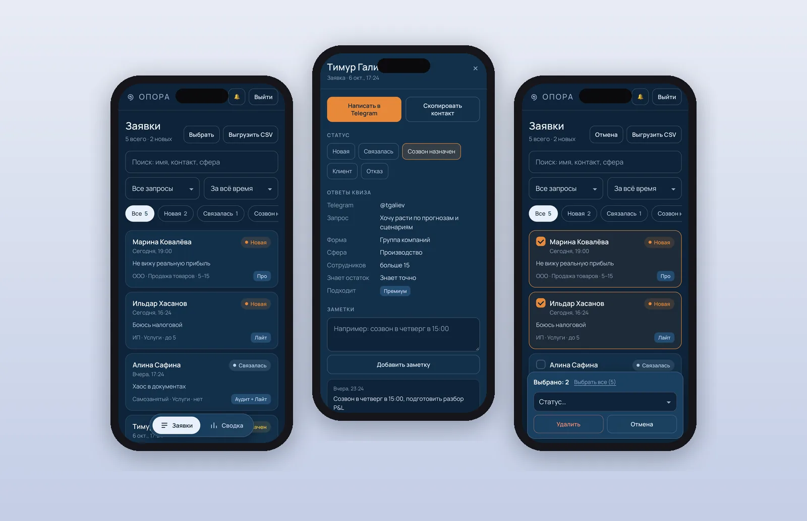
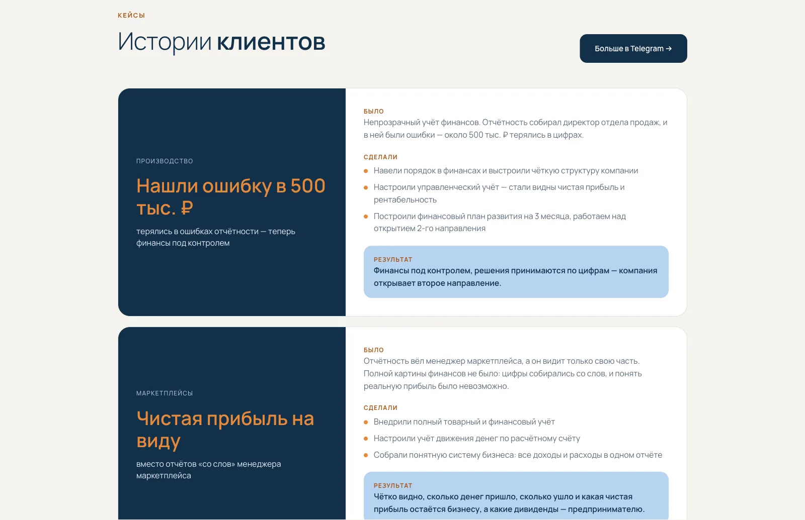

Кейс · бухгалтерия · CRM
Финансовая
опора.
Арина Самитова — финансист и бухгалтер из Казани, основатель аутсорса ОПОРА. Ей был нужен сайт, который объясняет непростую услугу человеческим языком и приводит заявки, — и система, в которой ни одна заявка не теряется. Я собрал и то и другое: сайт, квиз, облачный бэкенд и приложение для заявок.
- Клиент
- ОПОРА, Казань
- Платформа
- wfolio + свой код
- Бэкенд
- Яндекс Облако, 0 ₽/мес
- Срок
- 3 дня до рабочей CRM

Задача — объяснить сложное просто
Бухгалтерия и управленческий учёт — услуга, которую предприниматель редко понимает до конца. Он не знает, чем P&L отличается от выписки по счёту, и не видит, зачем платить за то, что «и так вроде работает». Поэтому сайт должен был сначала показать проблему, а уже потом — решение.
Сайт живёт на конструкторе wfolio, но шаблон хостинга навязывает свои шрифты, цвета и отступы. Я пошёл другим путём: весь лендинг — один блок с собственным кодом, который аккуратно перекрывает стили шаблона. Так у Арины остался привычный конструктор, а у сайта — свой дизайн без компромиссов.
- «3 признака, что бизнесу нужна ОПОРА» — клиент узнаёт свою ситуацию
- Путь в четыре шага: учёт → полная картина → прогноз → правильные решения
- Сферы: производство, продажа товаров, услуги
- Пакеты Лайт, Про и Премиум с ценами, таблицей сравнения и подбором по запросу
- Блок об основателе, три кейса клиентов с цифрами, отзывы и FAQ
- Кнопка Telegram-бота «Нейла» — помощника по личным финансам
Квиз вместо формы
Вместо скучной формы «имя — телефон» на сайте стоит квиз из трёх шагов: что беспокоит, какой бизнес и как связаться. Клиент отвечает в пару касаний, а Арина ещё до звонка знает форму бизнеса, сферу, размер команды и главную боль.
- Контакт на выбор: ник в Telegram с проверкой или телефон с маской
- Согласие на обработку данных по 152-ФЗ и скрытая ловушка для спам-ботов
- Пока заявка уходит — индикатор отправки, чтобы клиент не закрыл страницу
- Если связь подвела, заявка не теряется: клиент видит её текст и кнопки «Написать в Telegram» и «Написать в MAX»

Админка в телефоне
Заявки с квиза попадают в собственное PWA-приложение: Арина поставила его на iPhone прямо из браузера, без магазина приложений, и получает push-уведомление о каждой новой заявке.
- Вход по почте и паролю, сессия в защищённом токене
- Статусы: новая, связалась, созвон назначен, клиент, отказ
- Карточка заявки: ответы квиза, рекомендуемый пакет по ответам клиента и заметки
- Связь в одно касание: написать в Telegram или позвонить
- Массовые действия: выбрать несколько заявок и сменить статус или удалить разом
- Сводка по формам бизнеса, сферам и запросам, выгрузка в CSV
- Обновление жестом «потянуть вниз» и автоматически раз в минуту

Облако за 0 ₽
Под сайтом и админкой — бэкенд на Яндекс Облаке: API Gateway, Cloud Functions и база YDB Serverless. Я уложил его в бесплатные лимиты — при нагрузке небольшой компании это сотни тысяч запросов в запасе, а платить за сервер не нужно вовсе.
- Приём заявок с защитой от спама и лимитом запросов с одного адреса
- Доступ к заявкам только после входа, запросы — только со своих доменов
- Уведомления ограничены по времени: сайт отвечает клиенту быстро, даже если сервис push задумался
- Данные клиентов — на серверах в России
Видно поиску и ИИ
Каждый факт о компании живёт на сайте дважды: в тексте для людей и в разметке Schema.org для поисковиков и ИИ-ассистентов. Услуга, пакеты с ценами, основатель, контакты, ИНН и ответы на частые вопросы размечены так, что Яндекс, Google и нейросети понимают, кто такая ОПОРА и сколько стоит работа с ней.
Сайт переехал на собственный домен oporasamitovva.ru без потери заявок: старый адрес перенаправляет на новый, а облако принимает заявки с обоих.

Что получилось
Сайт, который говорит с предпринимателем на его языке, и система, в которой заявка проходит путь от квиза до статуса «клиент» без переписки в мессенджерах. Тексты, кейсы и пакеты Арина меняет вместе со мной за минуты — сайт растёт вместе с её бизнесом.
Мы сделали сайт буквально за два дня — это в моей голове не укладывается)) Сайт полностью функциональный, уже есть 2 заявки. Позиционирование моей компании стало отлично оформлено. Спасибо, Антон!


Следующий проект — ваш
Нужен сайт под задачу?
Расскажите об идее — обсудим структуру, формат и сроки за пару сообщений.